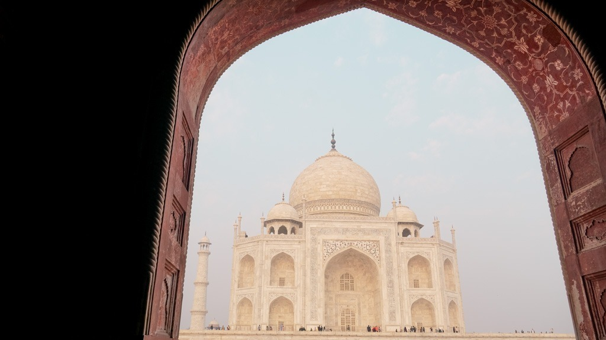
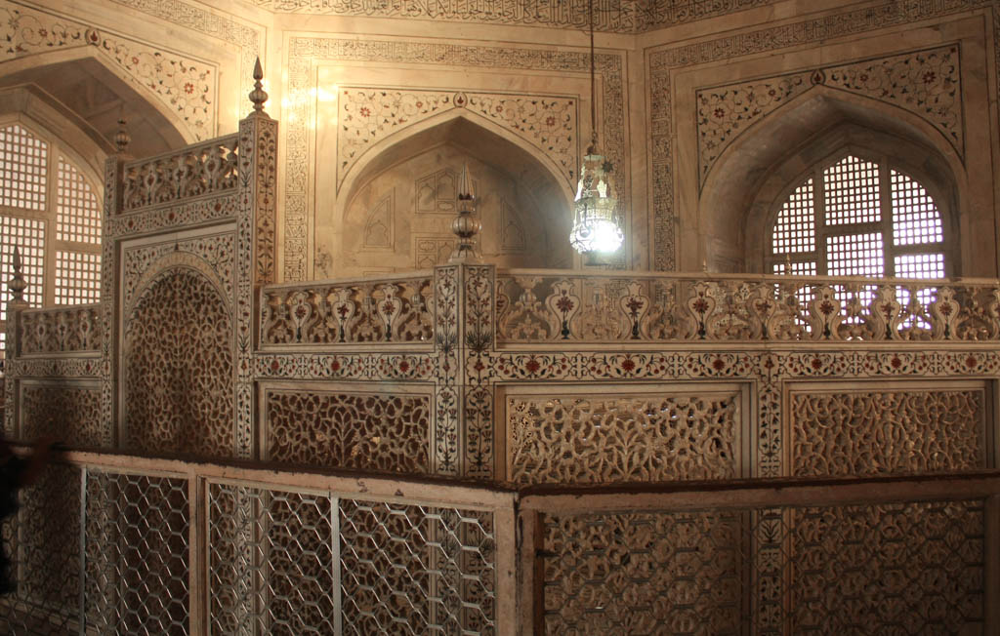
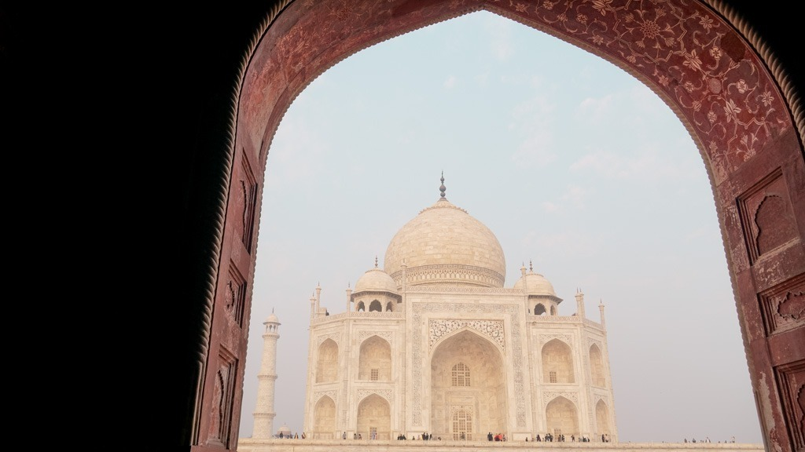
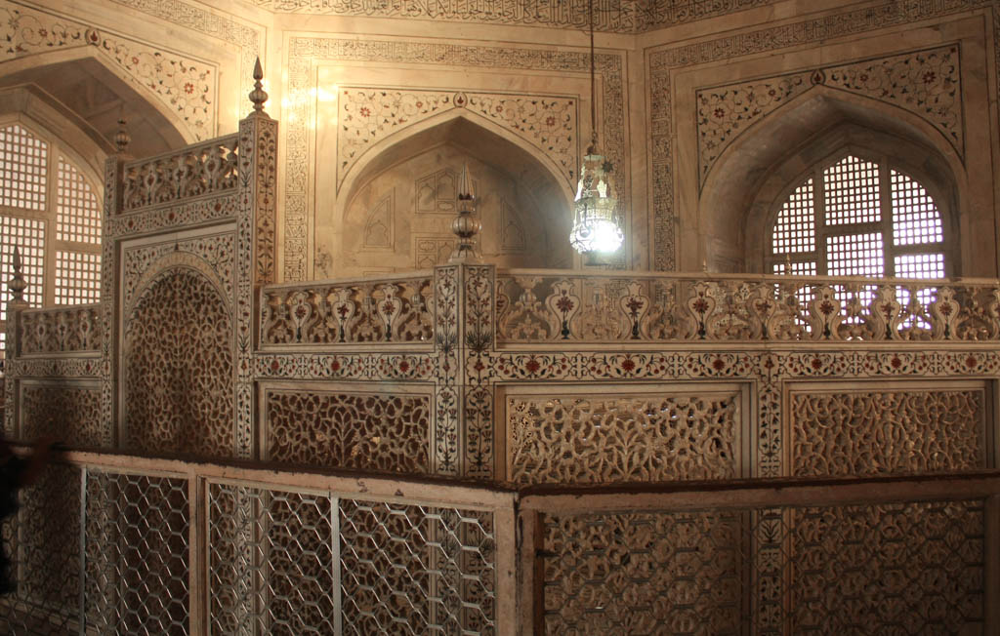

História
O Taj Mahal foi construído pelo imperador Mughal Shah Jahan em memória de sua esposa Mumtaz Mahal, que morreu em 1631 durante o parto de seu 14º filho. Shah Jahan estava devastado pela perda e decidiu construir um mausoléu monumental para honrar sua memória. A construção do Taj Mahal começou em 1632 e levou aproximadamente 21 anos para ser concluída, sendo finalizada em 1653. A obra empregou milhares de trabalhadores e artesãos de diferentes regiões, incluindo Índia, Irã, e Ásia Central. O projeto envolveu uma quantidade enorme de mármore branco, além de pedras preciosas e semi-preciosas para detalhamentos decorativos. O Taj Mahal não só se tornou um símbolo de amor eterno, mas também um exemplo de arquitetura Mughal em sua forma mais pura e refinada.
Arquitetura
A arquitetura do Taj Mahal é uma fusão harmoniosa de vários estilos arquitetônicos, refletindo a rica herança cultural do Império Mughal. O mausoléu principal é um exemplo esplêndido do estilo Mughal, com uma grande cúpula central rodeada por quatro minaretes. A cúpula tem uma altura de cerca de 35 metros e é cercada por uma série de domos menores, formando um elegante perfil. O edifício é construído em mármore branco, que foi extraído de uma pedreira em Makrana, no Rajasthan. O mármore é incrustado com pedras preciosas, incluindo jaspe, lapis lazuli, e ônix, formando complexos padrões geométricos e florais. O Taj Mahal também possui uma estrutura simétrica, com jardins divididos em quatro seções que representam os quatro rios do Paraíso descritos no Alcorão. O uso de água em fontes e canais acentua ainda mais a beleza e a serenidade do complexo.
Significado Cultural
O Taj Mahal é amplamente reconhecido como um símbolo do amor eterno, uma das mais belas realizações da arquitetura mundial. Sua construção representa um compromisso profundo com a memória de Mumtaz Mahal e a manifestação tangível do amor de Shah Jahan por ela. Além de ser uma das sete maravilhas do mundo moderno, o Taj Mahal é um Patrimônio Mundial da UNESCO desde 1983, sendo elogiado por sua beleza incomparável e seu significado histórico. O monumento atrai milhões de visitantes anualmente e é considerado um dos destinos turísticos mais importantes da Índia. O Taj Mahal também tem grande importância cultural e espiritual, sendo um local de peregrinação e celebração para muitos.
Como Surgiu?
A construção do Taj Mahal surgiu em um contexto de grande prosperidade econômica e estabilidade política do Império Mughal. Sob o reinado de Shah Jahan, o império vivia um período de esplendor cultural e artístico. Shah Jahan, que subiu ao trono em 1628, era conhecido por seu amor pela arte e pela arquitetura, e seu reinado foi marcado por uma série de construções grandiosas e projetos arquitetônicos. A decisão de construir o Taj Mahal foi uma resposta ao luto pela morte de sua esposa Mumtaz Mahal e reflete a capacidade do império de realizar grandes empreendimentos. O mausoléu foi projetado para ser um símbolo de poder e riqueza, além de uma manifestação da capacidade artística e técnica do Império Mughal.
Quando e Por Que Surgiu?
O Taj Mahal foi construído entre 1632 e 1653, durante um período de estabilidade e prosperidade no Império Mughal. A decisão de construir o mausoléu foi tomada após a morte de Mumtaz Mahal, a esposa favorita de Shah Jahan. A construção do Taj Mahal foi motivada por um desejo profundo de Shah Jahan de criar um monumento que representasse seu amor eterno e oferecesse uma eterna homenagem à sua esposa. O mausoléu não só serve como um local de sepultamento, mas também como uma declaração de amor e devoção. O contexto cultural e religioso da época, que incluía elementos do Islã e da tradição indiana, foi crucial para o design e a construção do Taj Mahal, resultando em uma fusão única de estilos e simbolismos.
Curiosidades
- O Taj Mahal muda de cor ao longo do dia e da noite. De manhã, ele aparece em tons de rosa; ao meio-dia, brilha em um branco resplandecente; e à noite, sob a luz da lua, adquire um brilho prateado.
- Shah Jahan planejava construir um segundo Taj Mahal em mármore negro, do outro lado do rio Yamuna, mas o plano foi abandonado após sua deposição por seu filho Aurangzeb.
- Para proteger o Taj Mahal da poluição e da deterioração, foi estabelecido um "zoneamento de proteção" ao redor do monumento. Medidas rigorosas de controle de poluição foram implementadas para preservar a integridade da estrutura.
- Durante a Revolta Indiana de 1857, o Taj Mahal foi danificado e saqueado, mas foi restaurado posteriormente. Muitas das peças de ornamentação originais foram perdidas ou danificadas durante este período.
- O Taj Mahal é frequentemente fotografado com um reflexo na piscina em frente a ele. Este reflexo é uma parte importante da simetria e da estética do design do complexo.
- Em 2009, o Taj Mahal foi incluído na lista das Sete Maravilhas do Mundo Moderno pela New7Wonders Foundation, como um dos maiores feitos arquitetônicos da história.
Galeria
 


